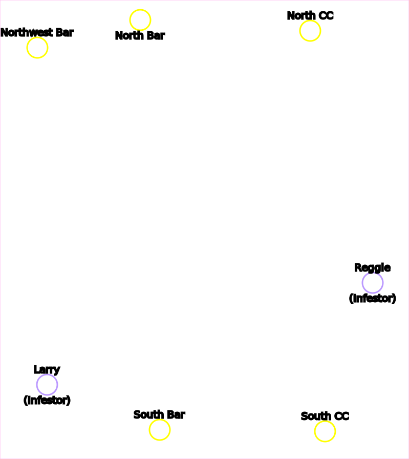
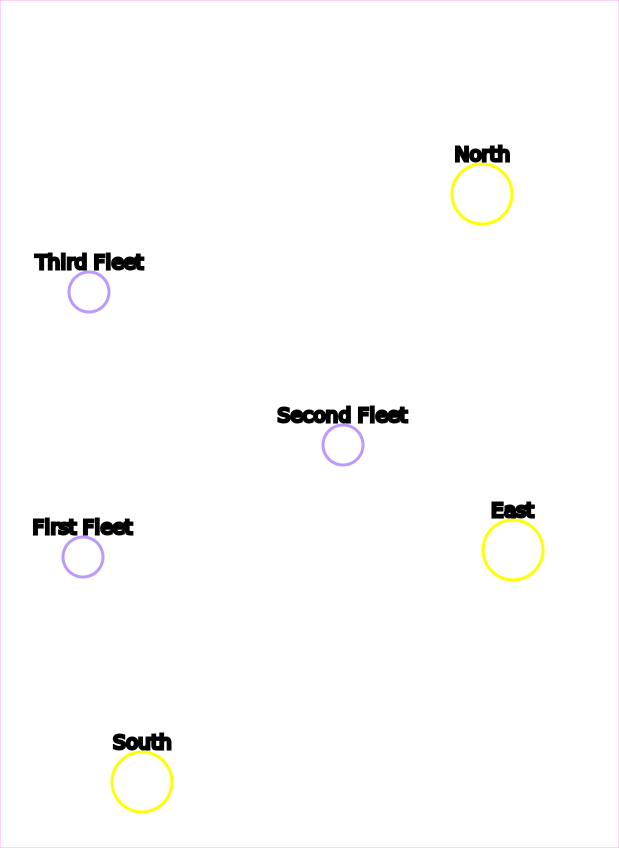
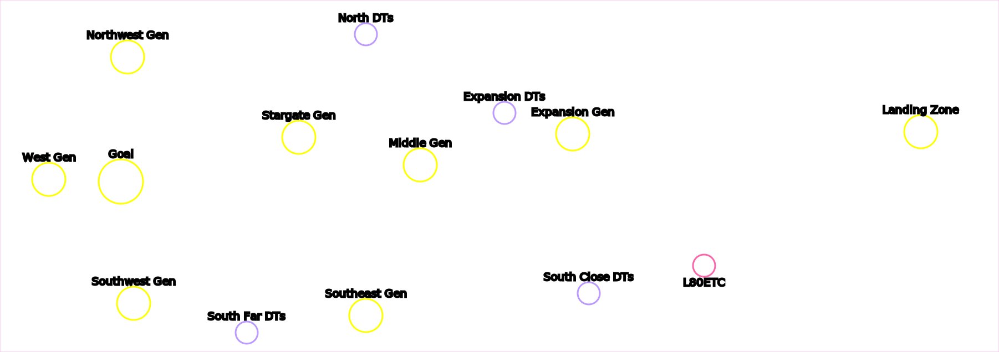
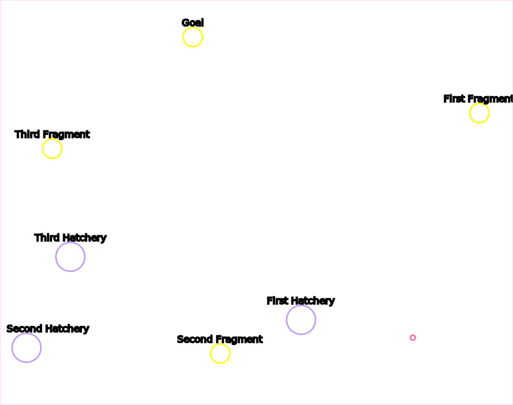
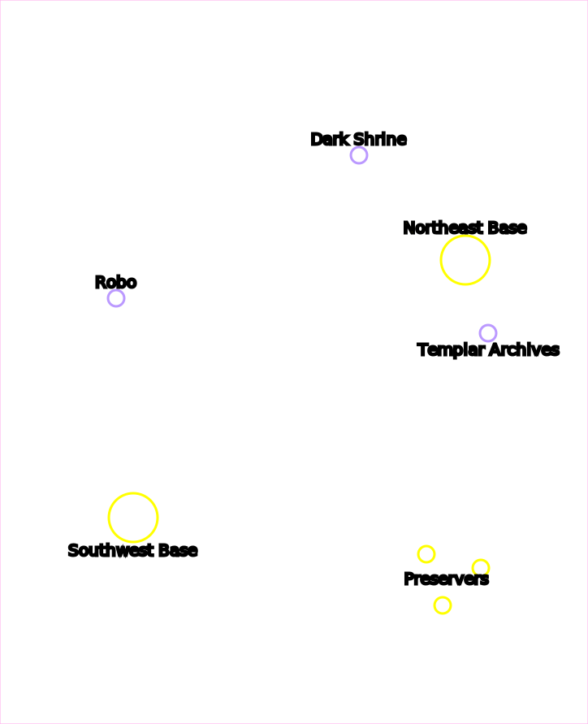
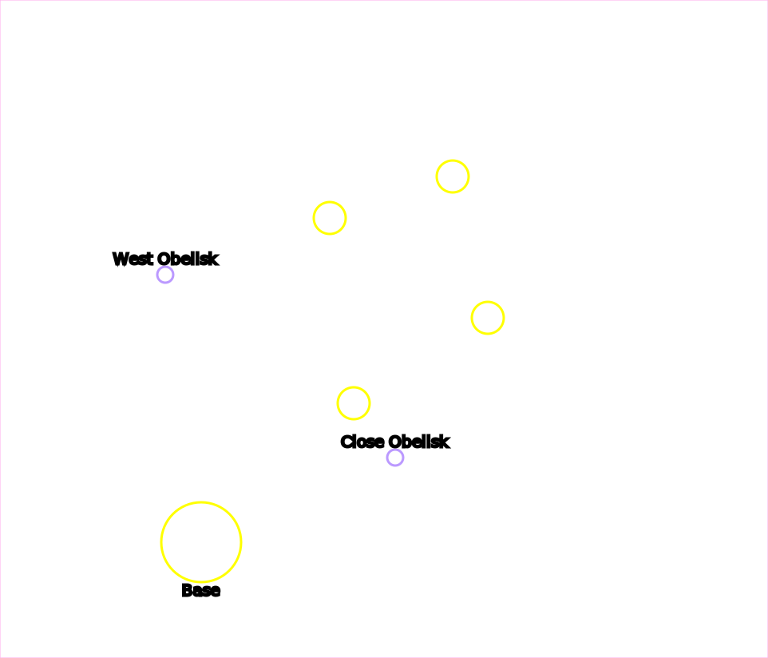

Wings of Liberty Campaign Locations
Contibutors
- Phaneros (aka "Phanerus") -- General code / tooling / HTML
- Neocerber -- Map pictures
- Mati -- Proof of concept
Liberation Day

- Bonus 6 statues
- Progression Special Delivery
- Victory
The Outlaws

- Bonus Clear the North Resource Pickups
- Bonus Rescue the Rebel Base
- Progression Nice job takin' out that bunker, Jimmy
- Victory
Zero Hour

- Bonus First Group Rescued
- Bonus Second Group Rescued
- Bonus Third Group Rescued
- Challenge Kill 1 Hatchery
- Challenge Kill 2 Hatcheries
- Challenge Kill 3 Hatcheries
- Challenge Kill 4 Hatcheries
- Victory
Tips
- The enemy rebuilds their hatcheries, and killing morphing hatcheries counts towards the check
Evacuation

- Secret Secret resource stash
- Note: This is reachable right at the start of the mission
- Bonus First Crysalis
- Bonus Second Crysalis
- Bonus Third Crysalis
- Progression Reach Hanson
- Challenge Don't lose any colonist or truck
- Victory
Outbreak

- Bonus Defeat Larry the Left infestor
- Bonus Defeat Reggie the Right infestor
- Progression Destroy the North Infested Command Center
- Progression Destroy the South Infested Command Center
- Progression Destroy the Northwest Bar
- Progression Destroy the North Bar
- Progression Destroy the South Bar
- Victory
Safe Haven

- Bonus Defeat the First Terror Fleet
- Bonus Defeat the Second Terror Fleet
- Bonus Defeat the Third Terror Fleet
- Progression North Nexus
- Progression East Nexus
- Progression South Nexus
- Victory
Haven's Fall

- Progression North Hive
- Progression East Hive
- Progression South Hive
- Challenge Northeast Colony Base
- Challenge East Colony Base
- Challenge Middle Colony Base
- Challenge Southeast Colony Base
- Challenge Southwest Colony Base
- Victory
Tips
- You can send one of your starting vikings south to gas island at the start of the mission to get +600 starting gas
Smash and Grab

- Bonus First Relic
- Bonus Second Relic
- Bonus Third Relic
- Bonus Fourth Relic
- Progression First Forcefield Area Busted
- Progression Second Forcefield Area Busted
- Victory
Tips
- All the artifacts can be acquired without units, by loading SCVs into your command center and flying it around
The Dig

- Bonus Left Relic
- Bonus Right Ground Relic
- Bonus Right Cliff Relic
- Progression Moebius Base
- Victory
Tips
- The top bases will not reinforce the right base; you can fly a building over the cliffs and snipe probes and pylons and the top base will not rebuild it
- There are five "special pylons" (annotated above) in 3 groups. Kill all the Pylons in a group, and the Warp Prism / air wave won't spawn from that direction
The Moebius Factor

- Bonus South Rescue
- Bonus Wall Rescue
- Bonus Mid Rescue
- Bonus Nydus Roof Rescue
- Bonus Alive Inside Rescue
- Boss Defeat Marshmallow the Moebius Brutalisk
- Progression 1st Data Core
- Progression 2nd Data Core
- Progression 3rd Data Core
- Victory
Tips
- The 1st data core can be cleaned up from the highground with just your starting units and the south rescue group
- The 2nd data core can be killed from the low-ground with just one ranged unit. To drop this unit, the medivac must circle the entire northeastern base
- Missile Turrets on Moe's island can heavily slow down or outright stop many attack waves
Supernova

- Bonus West Relic
- Bonus North Relic
- Bonus South Relic
- Bonus East Relic
- Progression Landing Zone Cleared
- Progression Middle Base
- Progression Southeast Base
- Victory
Maw of the Void

- Bonus Expansion Prisoners
- Bonus South Close Prisoners
- Bonus South Far Prisoners
- Bonus North Prisoners
- Boss Mothership
- Progression Landing Zone Cleared
- Progression Expansion Rip Field Generator
- Progression Middle Rip Field Generator
- Progression Southeast Rip Field Generator
- Progression Stargate Rip Field Generator
- Progression Northwest Rip Field Generator
- Progression West Rip Field Generator
- Progression Southwest Rip Field Generator
- Victory
Tips
- The Nerazim Dark Templar you rescue can use Shadow Fury to snipe cannons from outside their detection range
The Devil's Playground

- Bonus Tosh's Miners
- Bonus North Reapers
- Bonus Middle Reapers
- Bonus Southwest Reapers
- Bonus Southeast Reapers
- Bonus East Reapers
- Boss Defeat Donut the Devilish Brutalisk
- Victory
Welcome to the Jungle
- Bonus Close Relic
- Bonus West Relic
- Bonus North-East Relic
- Bonus Middle Base
- Challenge Main Base
- Note: This objective requires destroying _all_ protoss on the map, including outlying bases
- Challenge No Terrazine Nodes Sealed
- Challenge Up to 1 Terrazine Node Sealed
- Challenge Up to 2 Terrazine Nodes Sealed
- Challenge Up to 3 Terrazine Nodes Sealed
- Challenge Up to 4 Terrazine Nodes Sealed
- Challenge Up to 5 Terrazine Nodes Sealed
- Victory
Breakout
- Bonus Diamondback Prison
- Bonus Siege Tank Prison
- Progression First Checkpoint
- Progression Second Checkpoint
- Victory
Ghost of a Chance
- Bonus First Island Spectres
- Bonus Second Island Spectres
- Bonus Third Island Spectres
- Progression Terrazine Tank
- Progression Jorium Stockpile
- Victory
The Great Train Robbery

- Bonus North Defiler
- Bonus Mid Defiler
- Bonus South Defiler
- Bonus Close Diamondback
- Bonus Northwest Diamondback
- Bonus North Diamondback
- Bonus Northeast Diamondback
- Bonus Southwest Diamondback
- Bonus Southeast Diamondback
- Challenge Kill Team
- Victory
Cutthroat

- Bonus North Relic
- Bonus Mid Relic
- Bonus Southwest Relic
- Progression North Command Center
- Progression South Command Center
- Progression West Command Center
- Progression Hire Mira Han
- Victory
Tips
- Siege tanks can hit Orlan's command center from the low ground south of it, at the spot labeled "tank spot". If siege tanks are not unlocked, you can hire Mira and use her Siege Breakers
- Technically, none of the progression locations are required to beat the mission; you can win by killing Orlan's Command Center without hiring Mira
- On easier difficulties (tested on normal and lower) with Planetary Fortresses unlocked, it's possible to build an engineering bay, load SCVs into your starting Command Center, float and land it in Orlan's base, and upgrade to a Planetary right next to him. The SCVs must repair to keep the planetary alive
Engine of Destruction
- Bonus Lab Devourer Sample
- Bonus North Devourer Sample
- Bonus Southeast Devourer Sample
- Boss Defeat the Loki
- Progression Reach the Odin
- Progression West Base
- Progression Northwest Base
- Progression Northeast Base
- Progression Southeast Base
- Victory
Media Blitz
- Bonus Science Facility's secret documents
- Progression Tower 1
- Progression Tower 2
- Progression Tower 3
- Progression Destroy all barracks
- Progression Destroy all factories
- Progression Destroy all starports
- Challenge Win without losing the Odin
- Victory
Tips
- With a good route on the sneak attack, it is possible to eliminate the command center and all factories in the factory base and the command center and all starports in the starport base. The enemy will send remaining defenders in the bases in attack waves, but will run out after about 2 per base
- There are 19 barracks, factories, and starports on the map. All starports are in the starport base, but factories and barracks are spread among all bases
Piercing the Shroud

- Bonus Holding Cell Relic
- Bonus Brutalisk Relic
- Bonus First Escape Relic
- Bonus Second Escape Relic
- Boss Sherbet the Shrouded Brutalisk
- Progression Fusion Reactor
- Victory
Tips
- If you've never seen this mission before, it's a secret mission normally unlocked by collecting the secret documents in Media Blitz
- Murky is on this map in a marine suit
Whispers of Doom

- Bonus First Hatchery
- Bonus Second Hatchery
- Bonus Third Hatchery
- Progression First Prophecy Fragment
- Progression Second Prophecy Fragment
- Progression Third Prophecy Fragment
- Victory
Tips
- The first couple of sections can be skipped by blinking Zeratul over the wall using vision you get around the marked point
- The third hatchery can be hit from the low-ground by your stalkers. No need to fight throught all the roaches and spine crawlers
A Sinister Turn

- Bonus Power the Robotics Facility
- Bonus Power the Dark Shrine
- Bonus Power the Templar Archives
- Progression Destroy the Northeast Base
- Progression Destroy the Southwest Base
- Progression Defeat Maar the first time
- Progression Northwest Preserver
- Progression Southwest Preserver
- Progression East Preserver
- Victory
Echoes of the Future

- Bonus Close Obelisk
- Bonus West Obelisk
- Progression Obtain a Base
- Progression Southwest Tendril
- Progression Southeast Tendril
- Progression Northeast Tendril
- Progression Northwest Tendril
- Victory
In Utter Darkness
- Bonus Protect the Protoss Archive for 15 minutes
- Challenge Kills
- 1500 (Casual and Normal) / 2000 (Hard) / 2500 (Brutal)
- Progression Survive until Urun arrives
- Progression Survive until Mohandar arrives
- Progression Survive until Selendis arrives
- Progression Survive until Artanis arrives
- Victory (or defeat, in this case)
The Gates of Hell

- Progression Gather a Large Army (100 supply)
- Progression Rescue 2 Drop Pods
- Progression Rescue 4 Drop Pods
- Progression Rescue 6 Drop Pods
- Progression Rescue 8 Drop Pods
- Victory
Belly of the Beast


- Bonus First Group Rescued
- Bonus Second Group Rescued
- Bonus Third Group Rescued
- Progression First Charge
- Progression Second Charge
- Progression Third Charge
- Victory
Shatter the Sky
- Progression Close Coolant Tower
- Progression Northwest Coolant Tower
- Progression Southeast Coolant Tower
- Progression Southwest Coolant Tower
- Progression East Hatchery
- Progression North Hatchery
- Progression Mid Hatchery
- Boss Leviathan
- Victory
All-In